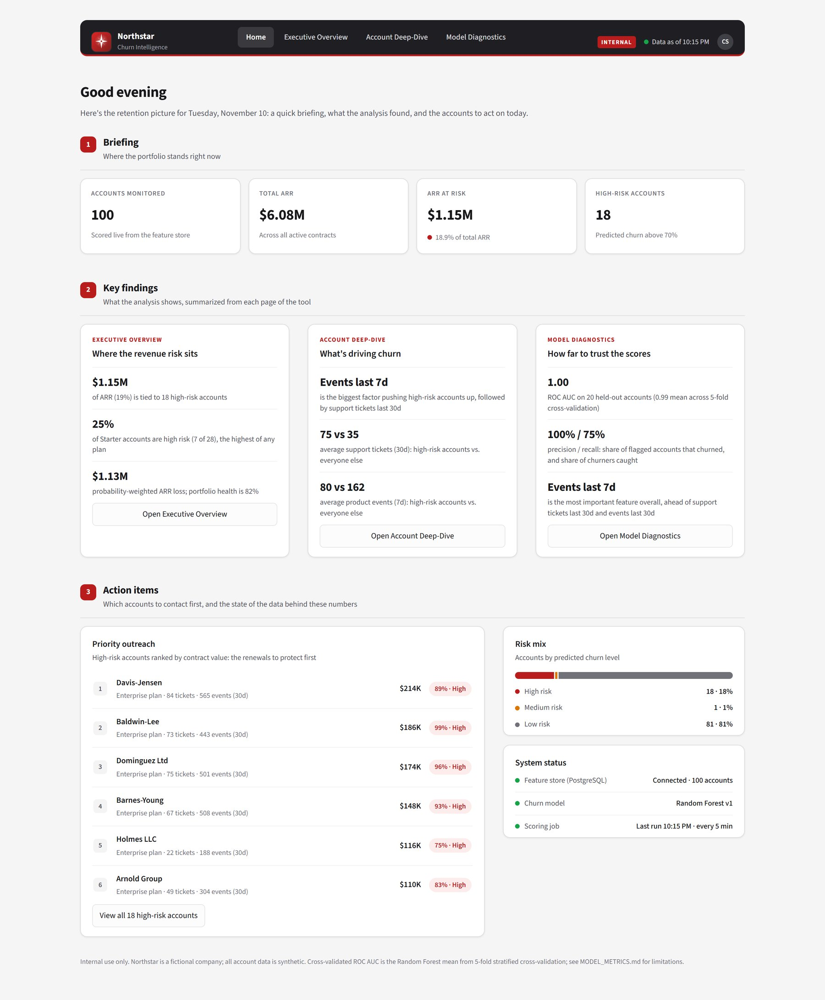

Placeholder artView screenshotsMachine learning
Customer Churn Prediction
A machine learning model that predicts which customers are likely to churn, with an executive overview, account-level deep dive, and model diagnostics.
View repository